Synthoria와 아산모아 메타버스에서 퀘스트·상점·상호작용 시스템과 월드 진입·지역 콘텐츠를 맡아, 패킷 구조·에러 코드를 서버 개발자와 문서로 먼저 합의한 뒤, 라이브 서비스와 그 코드베이스를 포크한 신규 프로젝트에 붙여 왔습니다. 기존 흐름을 유지한 채 새 경로를 먼저 추가하고, 실서버 왕복과 회귀 테스트로 확인한 뒤 구 경로를 제거합니다.
UE 5.6 라이브 서비스 메타버스 Synthoria에서는 외주가 미완성으로 넘긴 미니골프(18개 스테이지)를 다시 구현해 완성하고 상점 기능을 개발했으며, 상호작용·상점 시스템의 레거시 구조를 개선했습니다.
같은 회사 신규 프로젝트 아산모아 메타버스에서 클라이언트를 단독으로 맡아 서버 권위형 퀘스트 전환(실서버 왕복 19건 확인), 월드 진입 흐름과 관광 지도·미니맵·랭킹·보물찾기 같은 지역 콘텐츠, 모바일 커스터마이징 화면 GPU 병목 개선(Galaxy S20 실측 80ms에서 16.6ms)을 진행했습니다. 정식 출시 전 프로젝트입니다(Android 내부 테스트, iOS TestFlight).
패킷 구조·에러 코드·브로드캐스트 범위를 서버 개발자와 문서로 먼저 합의하고, 서버 생성물이 확정본인 계약은 제안서로 전달합니다.
Unreal Insights로 병목을 계측해 원인을 좁히고, 상점 첫 오픈 프레임의 동기 로딩을 비동기 프리로딩과 소프트 레퍼런스로 없앤 경험이 있습니다.
아산모아에서는 라이브 코드베이스 포크 마이그레이션(5개 게이트 완료)·신규 백엔드 이관·웹 로그인 전환·자동화 테스트 도입(테스트 정의 0 → 69개)·Android/iOS/Windows 빌드와 콘텐츠 CDN 배포 파이프라인도 담당하고 있습니다.
Unity 기반 교육용 미니게임 모음집 RollingSeed에서 기획서 없이 레거시를 직접 플레이·분석해 미니게임 6종을 4개월 1인 전담으로 리마스터 프레임워크에 이식했습니다.
Editor Utility Widget·Python(Unreal), EditorWindow(Unity), Commandlet으로 반복 작업을 도구화해 왔습니다.
01 · 주식회사 셔블
Synthoria 라이브 서비스 메타버스 플랫폼
기간
2025.12 ~ 2026.06
역할
게임 클라이언트 프로그래머 (정직원)
기술
UE 5.6 · C++ · Blueprint
라이브 서비스 대상 변경은 모두 feature 브랜치에서 진행하고, 영향 범위·테스트 포인트를 문서화한 뒤 반영했습니다.
미니골프 미니게임 리팩토링 및 완성
문제 외주에서 미완성 상태로 넘어온 미니게임이 Child Actor로 고정 배치된 구조였고 설계 문서가 없음판단 코드와 실제 플레이로 구조를 파악하고 DataTable 기반 스폰으로 전환결과 18개 스테이지 재구현과 데이터 파이프라인까지 핵심 구현을 약 2주에 1인으로 마침
외주에서 미완성 상태로 넘어온 미니게임을 설계 문서 없이 리팩토링·재구현·자동화하고, 약 2주(2026.01.21 ~ 02.03) 동안 핵심 구현을 1인으로 마쳤습니다.
2026.01.21 ~ 02.03
1인 단독
C++
Blueprint
Python
Enhanced Input
Editor Utility Widget
DataTable
배경
외주에서 미완성 플러그인 상태로 인계받았고, 스테이지 오브젝트가 런타임 스폰 대신 Stage Blueprint마다 Child Actor Component로 일일이 고정 배치된 구조였습니다.
설계 문서가 없어 코드와 실제 인게임 플레이만으로 구조와 동작 규칙을 파악했습니다.
리팩토링 및 재구현
Stage Blueprint에 Child Actor Component로 고정돼 있던 오브젝트 배치를 DataTable 기반 스폰 구조로 전환하고, 하드코딩된 좌표·회전값과 타입 오류를 정리했습니다.
공용 미니게임 FSM 위의 라운드 진행·강제 종료·컨티뉴 흐름 구현과 물리 샷 로직 이식, UI, 18개 스테이지 정리까지 단독 수행했습니다.
스테이지 데이터 파이프라인 — Stage Blueprint의 배치값을 DataTable·CSV에 일괄 반영
드래그로 조준해 파워를 정하고 샷 — 공이 코스를 따라 굴러감퍼팅 → 골인 → Par 연출과 점수 반영
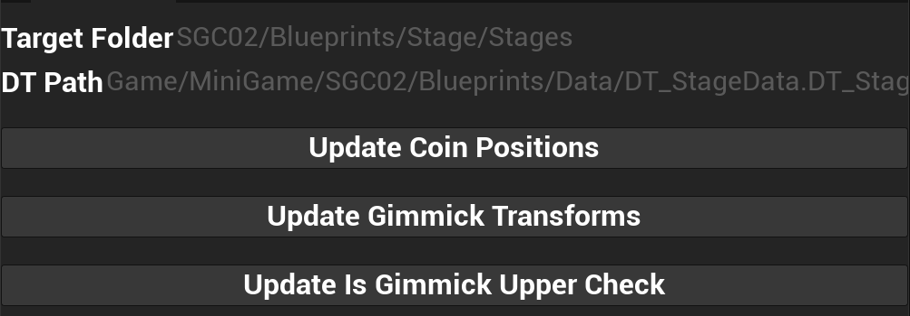
오브젝트 위치 EUW — 스테이지 BP의 코인 위치·기믹 Transform·상단 판정을 DataTable에 일괄 반영
단일 Enhanced Input Touch 액션에서 샷 차지, 카메라 회전, 핀치 줌의 3가지 제스처로 분기했습니다.
인수 코드의 AddImpulse 물리 샷과 궤적 표시 로직은 메인 모듈로 이식해 유지했습니다.
원본이 매 프레임 폴링하던 볼 정지 판정을 물리 Sleep 이벤트 기반으로 바꾸고 볼의 Tick을 껐습니다.
아키텍처
StageData(스테이지 메타), ScoreParData(스코어 기준), ResultWordData(결과 문구) 등 Data-Driven으로 설계했습니다.
TWeakObjectPtr + Delegate Unbind 패턴으로 메모리 안전성을 확보하고 ensure 경고를 제거했습니다.
콘텐츠
Fade, 카메라 연출, 사운드, GoalZone/FailZone 배치 등 폴리싱까지 수행했습니다.
상호작용 시스템 범용화 리팩토링
문제 의자 이름 문자열로 식별해 서버가 대상을 검증할 수 없었음판단 등록 방식 3가지 중 범용 서브시스템이 ObjectId로 조회하는 B안 선택결과 의자·상점 NPC 패킷을 범용 상호작용 패킷 하나로 통합
의자 이름 문자열로 식별하고 의자 Actor 하나가 모든 처리를 맡던 라이브 구조를, Actor 단위 정수 ObjectId 기반 범용 구조로 설계·전환했습니다.
2026.03 ~ 04
분석 · 설계 · C++ 리팩토링 · 에디터 도구 · 서버 협의
UWorldSubsystem
DataTable + CSV
Editor Utility Widget
문제
라이브 구조는 의자 Actor 하나가 클릭·패킷·위젯·좌석을 모두 처리하고, 서버에는 의자 이름 문자열을 보냈습니다. 서버가 대상을 검증할 기준이 없었고, 상호작용 타입이 늘 때마다 전용 서브시스템이 하나씩 생기는 구조였습니다.
판단
오브젝트 등록 방식을 3가지로 비교했습니다. A안(각 Action이 서버 서브시스템에 직접 등록)은 서버 서브시스템의 책임이 과중해지고, C안(Multicast 델리게이트)은 이벤트마다 전체를 순회합니다. 그래서 B안(범용 서브시스템이 ObjectId로 조회)을 택했습니다.
Before — 의자 전용 단일 상속 구조After — 범용 서브시스템 + Component·Action 계층
구현
상호작용 오브젝트 DataTable 행을 설계했습니다(ObjectId · LevelType · InteractionType · ObjectLocation · 레벨 인스턴스 여부 · WorldType · SeatCount). 이 테이블을 CSV로 추출해 클라이언트와 서버가 같은 데이터로 검증하게 했습니다.
InteractionSubsystem은 TMap<uint32, TWeakObjectPtr<UInteractionComponent>>로 ObjectId를 매핑하고, 레벨 로드 시 TActorIterator로 자동 스캔·등록합니다.
좌석 단위 점유와 가장 가까운 빈 좌석 배정을 구현하고, 상점 NPC까지 같은 구조로 확장했습니다.
의자·상점 NPC 전용 패킷을 ObjectId · 상호작용 타입 · 동작 타입 · 동작 데이터로 구성된 범용 상호작용 패킷 하나로 통합했습니다.
레벨과 레벨 인스턴스의 상호작용 Actor를 스캔해 ObjectId를 순차 부여하고 DataTable에 등록(같은 행은 갱신)하는 에디터 도구를 만들었습니다. C++ 지원 함수 10종과 EUW로 구성했고, 기존 의자 ID 전용 도구 4종은 정리했습니다.
패킷 변경 사항과 서버 계획서, 흐름 비교 문서를 작성해 서버 개발자와 에러 코드·동작 타입·브로드캐스트 범위를 협의했습니다.
벤치 앞 앉기 버튼 → 앉기 → 일어서기 버튼 → 일어나 이동
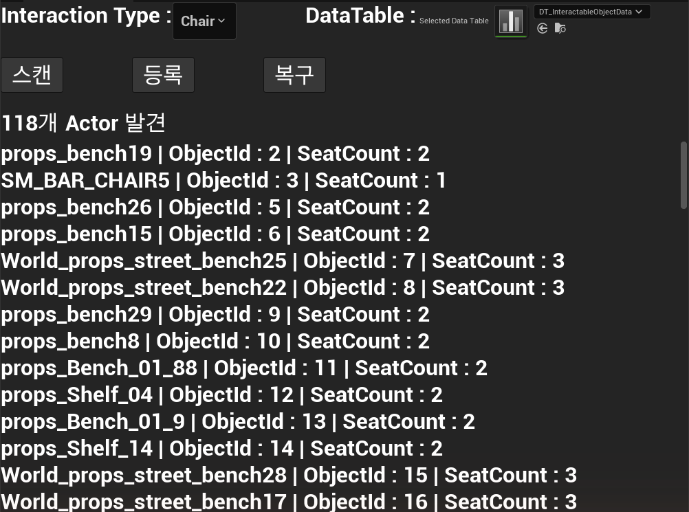
상호작용 등록 EUW — 의자 타입을 스캔해 메인 월드에서 118개 Actor를 찾고 ObjectId·좌석 수를 표시
하나의 데이터를 클라이언트와 서버가 공유하는 구조
단계
요청 패킷의 대상 식별
의미
기존 라이브 구조
의자 이름 문자열
서버가 대상을 검증할 수 없음
ObjectId 전환
정수 ObjectId + 동작 타입
Actor 단위 식별
좌석 단위 점유
ObjectId + 좌석 번호 + 동작 타입
다인 좌석 지원
범용 통합
ObjectId + 상호작용 타입 + 동작 타입 + 동작 데이터
의자·상점 NPC 등 공용
상점 시스템 게임서버 전환 및 프레임드랍 최적화
문제 상점만 REST로 남았고, 전환 후 첫 오픈에 프레임 스파이크(최종 수정 전 코드 재측정 248~303ms)판단 가변 길이 단일 패킷으로 사양 확정, Insights로 Definition 동기 로딩을 병목으로 확정결과 2단계 비동기 프리로딩과 소프트 레퍼런스로 첫 오픈 프레임 최대 44.3ms (에디터 PIE)
상점 통신을 REST에서 게임서버 TCP 패킷으로 전환하고, 전환 후 발견한 첫 오픈 프레임 스파이크(최종 수정 전 코드 재측정 248~303ms)를 Unreal Insights로 추적해 비동기 프리로딩으로 해소했습니다.
2026.04
프로토콜 재설계 · 패킷 파싱 · 트러블슈팅 · 프로파일링
TCP 바이너리 프로토콜
Unreal Insights
StreamableManager
TSoftClassPtr
REST → 게임서버 TCP 패킷 전환
상호작용 리팩토링을 마친 뒤 상점만 HTTP REST로 남아 있던 것을 정리 대상으로 제안하고, 범용 상호작용 패킷과 상점 아이템 목록 패킷으로 전환했습니다.
아이템 최대치를 4,680개로 산정해 고정 크기 배열(50슬롯)을 나눠 받는 안을 탈락시키고, 길이 헤더 기반 가변 길이 단일 패킷으로 서버 개발자와 사양을 확정했습니다. 수신 측은 Flexible Array로 파싱하고, 헤더의 패킷 크기와 2 + 아이템 수 × 항목 크기가 일치하는지 검증합니다.
패킷 도착 순서가 바뀌어도 열리도록 상점 오픈 조건을 양쪽에서 검사하게 했습니다.
상점 UI가 뜨지 않던 문제 3건을 순서대로 해결했습니다.
위젯 생성 전 데이터 주입 → 받은 데이터를 보관했다가 생성 시 빌드하는 Pending 패턴
Blueprint가 델리게이트를 바인딩하기 전 Broadcast → 다음 틱으로 지연
BlueprintImplementableEvent 시그니처 변경으로 무효화된 Blueprint 이벤트 → C++ 경로로 이관
구매 성공 델리게이트를 통화 갱신에서 분리해, 퀘스트 보상 등 상점 밖의 잔액 변동과 섞이지 않게 했습니다.
상점 아이템 목록 패킷 구조 비교
Unreal Insights 기반 프레임드랍 최적화
문제
상점을 처음 열 때 프레임 스파이크가 발생했습니다. 최초 발견 당시 작업 문서의 Insights 기록은 프레임 541ms 중 동기 에셋 로딩 540ms였습니다(원본 트레이스 미보존). 최종 수정(3차 프리로딩과 소프트 레퍼런스)을 되돌린 코드로 다시 측정하면 첫 오픈 프레임 248~303ms 중 동기 로딩이 64~66회 실행되며 92~93%를 차지했습니다.
원인 (2계층)
① 아이템 정의 조회가 메모리에 없는 Definition Blueprint를 게임 스레드에서 동기 로딩했습니다. ② 탈것 Definition이 스폰 Actor 클래스를 TSubclassOf<AActor> 하드 레퍼런스로 들고 있어 탈것 Blueprint·메시·머티리얼까지 연쇄 로딩됐습니다.
Before — 동기 로딩으로 게임 스레드 블로킹After — 2단계 비동기 프리로딩과 콜백 체인
1차 썸네일만 비동기 프리로딩 → 효과 미미. 병목이 텍스처가 아니라 Definition임을 확인
2차 프리로딩 완료를 기다린 뒤 UI 오픈 → 부분 개선. Insights로 진짜 병목(Definition 동기 로딩) 확정
프레임 44.3 / 41.2 / 43.7ms, 동기 로딩 호출 0회, 비동기 로딩이 여러 프레임에 나뉘어 처리
Unreal Insights 재측정 (2026-10-13)
두 측정 모두 에디터 PIE 환경이며, 패키지 빌드 기준 수치가 아닙니다. Before는 현재 코드에서 3차 프리로딩과 소프트 레퍼런스 커밋만 되돌려 측정했고(1·2차 시도인 썸네일 프리로딩과 완료 대기는 적용된 상태), After는 2026-10-13 코드 기준이라 같은 코드 기준의 전후 비교는 아닙니다.
결과: 첫 오픈 프레임 248~303ms(최종 수정 전 코드 재측정 3회) → 최대 44.3ms(Insights 재측정). 장착 시점의 클래스 해석은 실제 사용 시점이라 의도적으로 동기 처리를 남겼습니다.
관광 지도 — DataTable 행 이름을 식별자로 써 핀 표시 문제 해결, 전체 지도·관광지 상세·방문 보상 팝업, 안내판 24개 일괄 연결
커스터마이징 프레임 개선 — SceneCapture 4개를 원인으로 특정, Galaxy S20 실측 80ms에서 16.6ms
가상순찰 — 신규 패킷 없이 기존 이동 패킷으로 동기화, 순찰 정보를 입장 응답으로 받도록 서버와 합의(실서버에서 순찰 계정 접속과 다른 유저 화면 표시 확인)
콘텐츠·시스템퀘스트 · 월드 진입 · 보물찾기 · 랭킹 · 관광 지도 · 커스터마이징 · 가상순찰 (7개 항목)
서버 권위형 퀘스트 전환과 TCP 부분 수신 결함 수정
문제 클라이언트 판정 퀘스트, 수신 워커의 부분 수신 미처리판단 새 모델을 먼저 추가하고 실서버 왕복을 확인한 뒤 구 로직을 제거하는 2단계결과 퀘스트 19건 왕복 확인, 수신 결함 수정과 회귀 테스트 추가
클라이언트가 판정하던 퀘스트를 서버 권위형 조회 구조로 바꾸면서, 검토 중 발견한 non-blocking 소켓 부분 수신 결함을 함께 고쳤습니다.
2026.09 ~ 10
2단계 전환
TCP 수신 계층
회귀 테스트
문제
수신 워커가 non-blocking 소켓에서 "아직 데이터 없음"과 "연결 종료"를 구분하지 않아, 큰 패킷이 나뉘어 도착하면 스트림이 어긋날 수 있었습니다. 새 퀘스트 응답이 당시 가장 큰 패킷이라 실제로 이 결함을 건드릴 수 있었습니다.
판단
기존 흐름을 건드리지 않고 새 송수신·데이터 모델만 먼저 추가하고(서버의 열 단위 데이터를 행 단위 모델로 변환), 실서버 왕복을 확인한 뒤 구 로직을 제거하는 2단계로 진행했습니다. 신·구 동시 운영 상태에서 UI부터 바꾸는 안은 완료·보상이 이중으로 처리될 수 있어 버렸습니다.
1단계에서 실서버 왕복으로 퀘스트 19건과 필드 순서가 일치하는 것을 확인했습니다.
2단계에서 구 퀘스트 로직을 제거하고 일일·업적 UI를 새 모델로 전환한 뒤, 디자인 시안 기준 UI를 반영했습니다.
수신부는 데이터가 아직 없으면 읽기 가능 상태를 기다렸다 재시도하고, 프레임 하나를 조립하는 전체 과정에 단일 시간 제한(3초)을 둬 초과하면 부분 프레임을 재사용하지 않고 연결을 끊게 했습니다.
퀘스트 파싱·수신부·에셋·디자인 회귀 테스트를 추가했습니다.
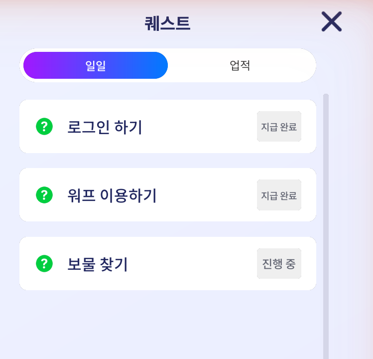
새 모델로 전환한 일일 퀘스트 — 지급 완료·진행 중 상태 표시
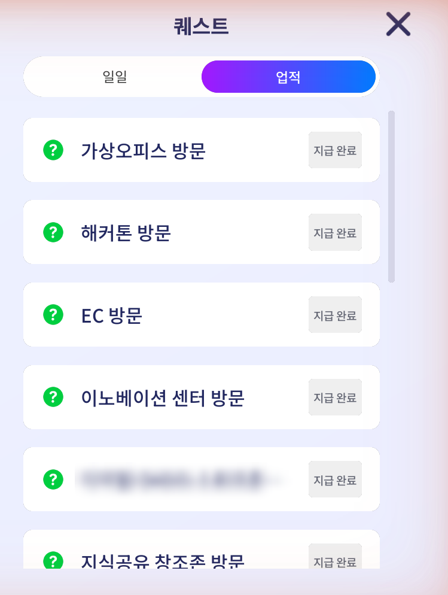
업적 탭 — 지역 방문 업적 (일부 업적 이름 가림)
퀘스트 패널 → 워프 → 로딩 → 완료 팝업(+100 P) (닉네임 가림)
2단계 전환수정한 수신 흐름
게임 월드 진입/전환 흐름
문제 로비를 거치게 되며 서버 입장 요청이 빠짐, 모바일에서 작은 건물을 누르기 어려움판단 레벨 타입·상태 소유권을 재정의하고 입력을 이름표 버튼과 드래그·핀치 카메라로 개편결과 입장 요청 누락 수정, 미니맵 워프 핀 자동 생성
로그인 후 월드 선택 로비를 거쳐 각 지역으로 이동하는 진입 흐름을 설계·구현하고, 모바일 사용성에 맞춰 입력 방식을 개편했습니다.
2026.08 ~ 10
C++
UMG
레벨 전환 서브시스템
레벨 타입을 데이터 테이블 키·서버 맵 타입과 일치하도록 재정의하고 상태 소유권을 정리했습니다.
게임 흐름이 바뀌어 로그인 직후 캐릭터 없는 로비를 거치게 되면서 서버 입장 요청이 빠진 것을 찾아 수정했습니다.
월드 선택 입력은 3D 건물 피킹으로 시작했지만, 모바일에서는 작은 건물을 누르기 어렵고 호버도 없어 상시 표시 이름표 버튼 + 드래그·핀치 카메라로 개편했습니다.
미니맵을 레벨별 지도와 데이터 테이블의 시작 지점 태그로 워프 핀을 자동 생성하는 구조로 바꿔 수작업 버튼을 없앴습니다(지도 좌표 변환 테스트 포함).
다층 건물 포탈에는 층 선택 팝업(C++ 위젯, 선택 상태·목적지 데이터 관리)을 추가했습니다.
월드 선택 — 이름표 버튼, 스마트폴 현황 패널(예시 데이터), 드래그 카메라레벨별 미니맵의 워프 핀 → 순간이동다층 건물 포탈 → 층 선택 팝업 → 선택 층으로 이동
월드 진입/전환 흐름
보물찾기 — 서버 상태 패킷과 Actor 등록 순서 경합 해결
문제 Actor 등록보다 상태 패킷이 먼저 도착하면 상태가 사라짐판단 아직 등록되지 않은 ID의 마지막 상태를 보관결과 Actor가 늦게 등록돼도 보관한 상태를 다시 적용
기존 상호작용·우편·재화 시스템을 재사용해 보물찾기 클라이언트를 구현하고, Actor 등록보다 상태 패킷이 먼저 도착하면 상태가 사라지던 경합을 해결했습니다.
2026.08
4개 지역 × 5 지점
서버 담당자와 공동 작업
아직 등록되지 않은 ID의 마지막 상태를 보관해 두고, Actor가 늦게 등록되면 그 상태를 다시 적용하게 했습니다.
보물 상호작용 → 발견 팝업과 보상 안내
보류 상태 재적용
랭킹 — 요청 ID 없는 응답을 상태 게이트로 처리
문제 응답에 요청 ID가 없어 늦은 응답과 중복 요청을 구분할 수 없음판단 무조건 재요청하지 않고 지표별 대기 상태 게이트로 처리결과 UI 상태가 꼬이지 않게 처리, 실서버 검증
새 TCP 랭킹 응답에는 요청 ID가 없어 늦은 응답과 중복 요청을 구분할 수 없었습니다. 지표(탭)별 대기 상태 게이트로 UI 상태가 꼬이지 않게 했습니다.
2026.10
3개 탭 · 상위 30위 · 내 순위 고정
실서버 검증
지표별 대기 상태 — 무조건 재요청하지 않음
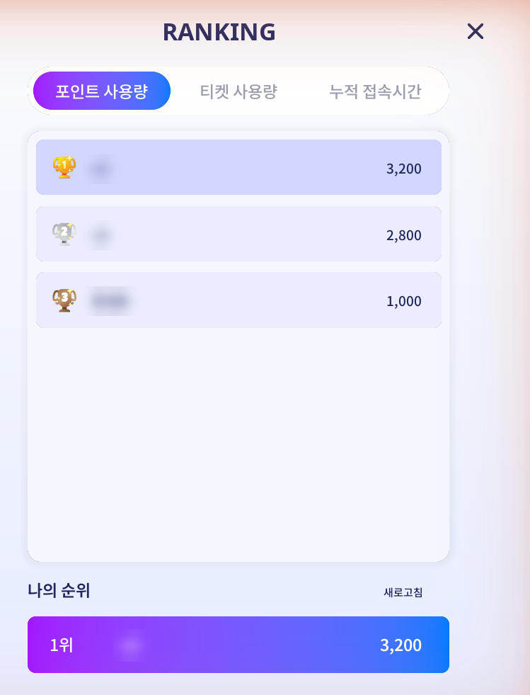
랭킹 3탭 · 상위 목록 · 내 순위 고정 행 (닉네임 가림)
관광 콘텐츠 — 전체 지도·관광지 상세·안내판 상호작용
문제 관광지 데이터의 숫자 ID가 전부 0이라 지도에 핀이 나오지 않음판단 관광지 전용 숫자 ID 대신 DataTable 행 이름을 식별자로 사용결과 전체 지도·관광지 상세·방문 보상 팝업 구현, 안내판 24개 일괄 연결
아산시 전체 지도(핀·확대/축소·드래그·핀치)와 관광지 상세·방문 보상 팝업을 구현하고, 맵의 안내판 24개를 에디터 도구로 일괄 연결했습니다.
2026.09 ~ 10
UMG · RenderTransform
DataTable RowName
문제
지도에 핀이 하나도 나오지 않았습니다. 관광지 데이터 23행의 숫자 ID가 전부 0이었고, 핀 생성이 ID 0을 건너뛰고 있었습니다.
해결
관광지 전용 숫자 ID를 버리고 DataTable 행 이름을 식별자로 쓰게 했습니다. 즐겨찾기용 서버 코드와는 분리해 유지했습니다. 방문 보상 버튼은 게임 서버 패킷에 연결했습니다(계정당 1회).
NPC 안내는 웹 오버레이와 이미지 팝업으로 구현했습니다.
관광 지도 — 축소 → 핀 선택 → 관광지 상세 → 드래그맵 안내판 상호작용 → 해당 관광지 상세로 지도 열림
커스터마이징 화면 모바일 프레임 드랍 개선 (Android 실측 12fps → 60fps)
문제 커스터마이징 화면이 모바일에서만 약 12fps판단 GPU bound로 판단하고, SceneCapture 4개를 끄면 16.6ms로 복귀하는 것으로 원인 확정결과 Galaxy S20 실측 80ms에서 16.6ms (60fps, vsync 상한)
커스터마이징 화면에서 모바일에서만 프레임이 약 12fps(Galaxy S20 실측)로 떨어지던 문제를 실기기 프로파일링으로 추적해, 아바타를 그리던 SceneCapture 4개가 원인임을 특정하고 Render Target 최적화와 성별 선택 상태에 따른 캡처 제어로 해결했습니다. 진단·수정·실기기 검증을 단독으로 맡았습니다.
2026.11
프로파일링 · GPU 병목 진단 · 렌더링 최적화
Galaxy S20 (Android, Vulkan)
CSV Profiler
SceneCapture2D · Render Target
C++ · Blueprint
80 → 16.6ms성별 선택 이후 커스터마이징 화면, Galaxy S20 실측 (60fps, vsync 상한)
338.40MB (개선 전, 캡처 4개 동작) → 94.18MB (2단계 빌드, 캡처를 끈 직후)
CSV, 측정 상태가 다르고 메인 화면 몫도 포함
Galaxy S20(SM-G981N, Android, Vulkan) Development APK 실측. 성별 선택 이후 최종 수치는 CSV 120프레임 기록, 성별 선택 화면 19.4ms는 측정 기록이며, 2단계 최종 상태의 stat unit 화면은 없습니다. iOS 실기기 측정은 아직 하지 않았습니다.
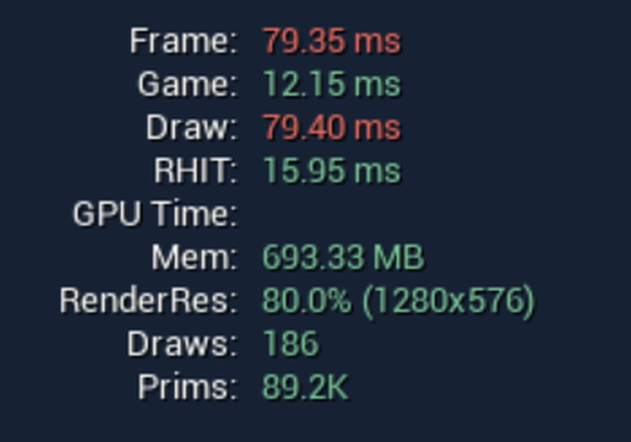
개선 전 stat unit 순간값, 성별 선택 화면 — Frame 79.35ms, Draw 79.40ms
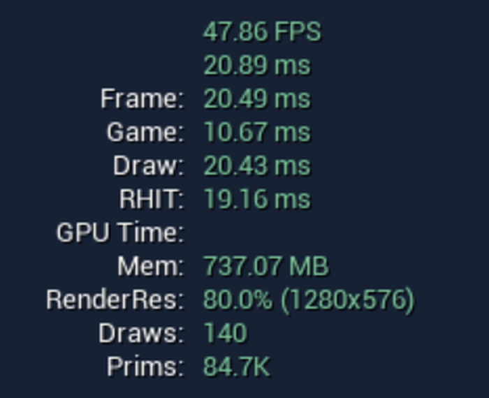
1단계 후 stat unit 순간값, 성별 선택 화면 — 47.86 FPS, Frame 20.49ms (최종 상태 아님)
패널의 Mem은 앱 프로세스 전체의 메모리 값이고 캡처마다 실행 조건이 달라 전후 비교 대상이 아닙니다. 이 패널은 프레임 타임 증빙으로만 제시합니다.
결과: Android 실기기 기준 커스터마이징 화면 80ms → 16.6ms(60fps), Render Target 메모리 256MB → 24MB(약 90% 감소, 계산값).
가상순찰 — 신규 패킷 없이 기존 이동 패킷으로 동기화한 순찰 시스템
문제 순찰 캐릭터의 이동을 다른 유저에게 어떻게 전달할지, 순찰 계정임을 언제 알릴지 정해야 함판단 신규 패킷 대신 기존 이동 패킷을 재사용하고, 순찰 여부·담당 구역·캐릭터 종류는 입장 응답에 싣기로 서버와 합의결과 서버 없이 순찰 코어를 먼저 구현한 뒤 연동, 에디터 플레이 실측 경로 이탈 최대 7cm (실서버에서 순찰 계정 접속과 다른 유저 화면 표시 확인)
순찰 계정으로 로그인하면 일반 아바타 대신 마스코트 캐릭터로 담당 구역에 들어가 지정 경로를 반복해서 걷는 기능을 새로 만들었습니다. 다른 유저 화면에도 같은 마스코트가 보이며, 장시간 무인 실행을 전제로 설계했습니다.
2026.11
C++
UMG
서버 계약 조율
경로 추종
UE Automation
순찰 계정 화면 — 순찰 시작 → 마스코트가 경로를 따라 걷기 → 순찰 중지 (Windows 빌드, 실제 서버 접속)
문제
순찰 캐릭터의 이동을 다른 유저에게 어떻게 전달할지 정해야 했습니다. 순찰 계정임을 로그인 직후 통지하는 초안도 성립하지 않았습니다. 계정 식별자가 로그인 요청이 아니라 그 뒤의 입장 요청에 처음 실리기 때문입니다.
판단
순찰 클라이언트가 경로를 걷고 일반 캐릭터와 같은 주기로 위치를 보내는 기존 이동 패킷 재사용을 골랐습니다. 순찰 여부·담당 구역·캐릭터 종류는 입장 응답에 싣는 것으로 서버 담당자와 맞췄습니다.
이동 동기화 방식 비교
안
내용
판단
기존 이동 패킷 재사용
순찰 클라이언트가 경로를 걷고 일반 캐릭터와 같은 주기로 위치를 보냄
채택
경로 정보만 전송
경로 ID·진행 거리·속도만 보내고 각 클라이언트가 같은 경로를 계산
신규 패킷 때문에 전 플랫폼 동시 업데이트가 필요해, 캐릭터 2종에는 과하다고 판단
서버 시뮬레이션
서버가 경로를 직접 시뮬레이션
서버에 경로 데이터와 이동 로직이 새로 필요
서버와의 계약 조율
입장 응답 기준 분기 — 입장 응답으로 순찰 계정을 판별하면 월드 선택 화면에서 지역을 고르지 않고 담당 구역으로 자동 이동합니다. 순찰 계정은 서버와 합의한 허용 패킷만 보내고 랭킹·퀘스트·튜토리얼 요청은 생략합니다.
전용 빌드를 두지 않기로 한 뒤의 대응 — 일반 빌드는 입장 응답 전까지 자신이 순찰 계정인지 모릅니다. 그래서 순찰 계정 닉네임 채우기(비어 있으면 캐릭터 생성 화면으로 빠짐)와 중복 접속 전용 에러 코드를 서버 쪽에 추가로 요청했습니다.
배포 순서 의존성 — 일반 유저 클라이언트도 외형 정보가 빈 순찰 캐릭터 생성 패킷을 받게 되므로, 새 프로토콜로 내는 빌드에는 순찰 캐릭터 표시 처리가 함께 들어가야 한다는 점을 찾아 서버 담당자와 배포 순서를 조율했습니다.
서버 없이 먼저 개발 — 에디터 전용 디버그 스위치와 테스트 레벨을 만들어 순찰 코어를 먼저 구현하고 자동 테스트를 함께 넣은 뒤, 서버 계약이 확정되고 나서 연동을 붙였습니다.
순찰 전용 캐릭터 구성
아트팀이 만든 순찰 NPC에 순찰 계정이 빙의하는 구조를 먼저 검토했지만, 그 NPC는 빙의할 수 없는 액터였고 액터는 제자리에 둔 채 메시만 움직이는 방식이라 카메라와 이동 패킷이 따라갈 위치가 없었습니다. 마스코트 2종은 골격이 서로 다르고 걷기 애니메이션 하나뿐이라 기존 플레이어 캐릭터 구조에도 맞지 않았습니다.
순찰 전용 캐릭터·컨트롤러·HUD를 새로 만들고 아트 에셋은 메시와 걷기 애니메이션만 가져왔습니다. 교체 지점을 GameMode 한 곳으로 모아 순찰 세션일 때만 세 클래스를 바꿔 끼우고, 기존 플레이어 클래스는 건드리지 않아 일반 유저 흐름에 영향이 없게 했습니다.
경로 추종은 시작·중지·재개·반복을 지원하고, 전용 HUD(초상화·이름·구역·시작/중지·로그아웃)를 디자인 시안대로 만들었습니다.
일반 유저 쪽에서는 순찰 마스코트를 플레이어 목록과 따로 관리해 프로필 보기·음성통화·이모티콘 대상에서 빠지게 했습니다.
이동 방식 전환 — 물리 걷기에서 경로 직접 추종으로
처음에는 경로 위 1m 앞 지점을 목표로 걷게 하고 실제 이동은 캐릭터 이동 컴포넌트에 맡겼습니다. 경로를 벗어나면 복구하고, 반복되면 팝업을 띄우게 했습니다.
경로를 만들 때 쓴 내비게이션 메시가 낮은 울타리를 장애물로 보지 않아 마스코트가 울타리에 막혀 멈췄습니다. 캡슐 크기로 경로 전체를 25cm 간격으로 다시 검사해 경로를 옮겼지만, 장시간 무인 실행에서는 언젠가 어딘가에 막힐 위험이 남았습니다.
그래서 바닥만 밟고 나머지는 모두 통과하도록 바꿨습니다. 충돌을 무시하고 이동 컴포넌트를 끈 뒤, 매 프레임 경로 위 거리를 걷기 속도만큼 늘려 직접 옮깁니다. 높이는 발밑 위 45cm ~ 아래 100cm 범위에서 바닥을 찾아 맞춰, 계단과 경사는 따라가고 머리 위 구조물은 무시합니다. 이탈 복구 로직과 이탈 팝업은 필요 없어져 삭제했습니다. 에디터 플레이(8배속) 한 바퀴 기준 경로 이탈 최대값은 33~34cm에서 7cm로 줄었고 이동 속도는 일정했습니다.
충돌을 완전히 끄면 엔진이 주는 캐릭터 키 값이 0이 되어 카메라 높이 계산이 깨졌습니다. 충돌은 켜 둔 채 모든 채널을 무시하게 했습니다.
물리 이동이 없으면 속도가 0이라 이동 패킷과 걷기 애니메이션이 멈췄습니다. 속도 값을 경로 방향 × 걷기 속도로 직접 채웠습니다.
중력이 없어 시작 지점 높이에 떠 있던 문제는 빙의 시점에 바닥에 한 번 세우도록 해결했습니다.
카메라
시점 드래그가 동작하지 않던 버그는 회전 입력을 엔진의 프레임 처리 뒤에 넣어 매 프레임 버려지던 것이 원인이었습니다. 이전 확인은 회전 값을 직접 설정하는 방식이라 이 문제를 잡지 못했고, 입력을 넣는 순서를 엔진 처리 앞으로 옮겨 해결했습니다.
장애물 회피는 새로 만들지 않고 프로젝트에 있던 3인칭 카메라 로직을 재사용했습니다. 구 형태 스윕 5개로 감지해 막히면 즉시 당기고 0.15초에 걸쳐 복귀합니다(에디터 실측 카메라 거리 403cm → 191cm → 403cm).
경로 배치와 협업 충돌
두 구역에 순찰 경로와 전용 시작 지점을 배치했습니다. 기획 동선 중 실제 레벨에서 들어갈 수 없는 곳(담으로 막힌 구역, 건널 수 없는 다리, 높은 단)은 바깥으로 도는 경로로 바꾸고 기획·아트 확인 사항으로 남겼습니다.
아트 브랜치가 같은 레벨을 따로 수정해 충돌했을 때는 아트 쪽 버전을 채택하고, 미리 뽑아 둔 순찰 경로 210개 지점과 시작 지점을 오차 없이 다시 배치했습니다. 같은 일이 생기면 다시 쓸 수 있게 추출본을 남겼습니다.
경로 이탈과 카메라 수치는 에디터 플레이 실측이며, 경로 이탈은 8배속으로 측정했습니다. 빌드·자동 테스트·에디터 플레이에 더해, Windows 빌드에서 실제 서버의 순찰 계정으로 접속해 마스코트 진입과 순찰 시작·중지·재개를 확인했고, 다른 유저 화면에 같은 마스코트가 보이는 것도 확인했습니다.
신규 백엔드 이관 — 이관 당시 구 136개 → 신 81개 엔드포인트, 로그인·버전/점검·우편·이벤트·친구 API 이관
자동화 테스트·에디터 도구 — 테스트 정의 0 → 69개, 오류가 있으면 아무것도 바꾸지 않는 ID 등록 도구
빌드/배포·콘텐츠 CDN — Android·iOS·Windows 빌드, 콘텐츠 리비전 16까지 게시·전환(정식 출시 전, 내부 테스트 배포 대상)
크로스플랫폼 크래시 — 크래시·빌드 블로커 4건 중 3건 근본 원인 수정, cook 데드락 1건 우회
웹 로그인 전환 — 임베디드 웹뷰에서 OS 브라우저 + 커스텀 스킴 딥링크로, Android·iOS·Windows 확인
플랫폼별 조명 분리 — 모바일은 구운 조명, Windows는 실시간 조명으로 서브레벨 분리, Windows 콘텐츠 청크 약 129.6MB 감소
기타 — 스마트폴 Mock, 신규 회원 튜토리얼, 튜토리얼 이미지 메모리, 이미지·영상 빌보드, 즐겨찾기 TCP 연동, FCM 푸시, Android 요구사항 대응, 아바타·아이템 데이터 이관
플랫폼·인프라8개 항목 상세 (눌러서 펼치기)
프로젝트 마이그레이션 단독 설계·수행 (Fork-and-Trim)
문제 라이브 코드베이스에서 신규 프로젝트를 출범해야 함판단 새로 짜지 않고 통째 복제한 뒤 안전 항목만 점진적으로 제거결과 5개 게이트 완료, Android 내부 테스트·iOS TestFlight 도달
라이브 서비스 코드베이스를 통째 복제한 뒤 안전한 항목만 점진적으로 제거하는 방식을 설계하고, 5개 게이트를 모두 완료했습니다.
2026.06 ~
전략 설계 · 게이트 관리 · 안전 트리밍
Android 내부 테스트 · iOS TestFlight 배포 도달
"새로 짜기" 대신 이미 컴파일되는 라이브 코드에서 출발해 초기 포팅 리스크를 없애는 방식을 택했습니다.
시딩 → 리브랜딩 → 서버·매크로 재정의 → 안전 트리밍 → 패키징의 5단계 게이트를 세우고 순서대로 진행했습니다.
삭제 대상의 참조를 4계층(필수 BP → 기능 BP → 맵 → 대형 아트)으로 나눠 추적했습니다. C++를 먼저 삭제하고 컴파일을 확인한 뒤 에디터에서 잔존 Blueprint를 정리하는 2단계 절차로 미니게임·게임센터·영상 플레이어·인앱 결제 코드를 제거했습니다.
승계된 기술부채는 즉시 지우지 않고 백로그로 추적했습니다. 삭제 후보로 분류했던 기능을 기획 스펙과 대조해 유지로 정정한 사례도 있습니다.
11월에는 원본 프로젝트 이름으로 남아 있던 빌드 Target과 C++ 게임·에디터 모듈 이름을 현재 프로젝트 이름으로 바꿨습니다(모듈 변경 676개 파일). 기존 에셋과 사용자 기기의 세이브 파일이 옛 클래스 경로를 담고 있어, 옛 경로를 새 모듈로 잇는 redirect를 넣어 에셋 재저장 없이 호환을 유지했습니다. 에셋에 영향이 없는 Target 이름을 먼저 바꿔 3플랫폼 빌드로 확인한 뒤 모듈 이름을 바꿨고, 3플랫폼 빌드·cook과 iOS 실기기 실행을 확인해 릴리스에 포함했습니다. 개별 클래스와 로그 카테고리의 옛 이름은 아직 남아 있습니다.
게이트
내용
기간
상태
G0 시딩
라이브 코드베이스 포크 · 빌드 확인
06.09
완료
G1 리브랜딩
앱 정체성 · 패키지명 · 표시명 · 산출물 이름 통일
06.10 ~ 10.29
완료
G2 서버·매크로 재정의
서버 대상 매크로 · URL 교체 · Mock 라우팅 토대
06.10 ~ 06.30
완료
G3 안전 트리밍
cook 제외 · 미사용 기능 제거 · 인앱 결제 코드 · 결제 SDK 제외
06.10 ~ 09.17
완료
G4 패키징
Android 서명 · 내부 테스트 / iOS 서명 전환 · TestFlight
06.11 ~ 09.29
완료
G1은 아이콘·로그인/로딩 배경·로그인 첫 로딩 화면까지 교체했습니다. 기간은 커밋 기준입니다.
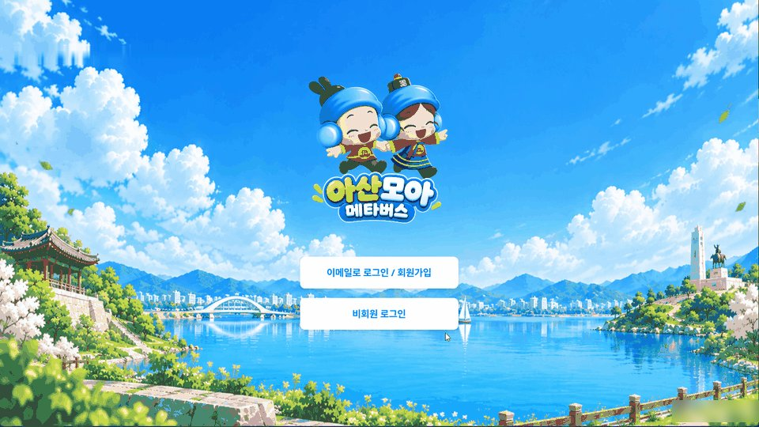
G1 리브랜딩 — 교체한 로그인 화면 (빌드 표기 가림)지역 이동 로딩 화면 배경
안전 트리밍 절차
신규 백엔드 이관 — 로그인·버전/점검·우편·이벤트·친구
문제 계정 식별자가 UUID로 바뀌는 등 신규 백엔드와 기존 계약이 맞지 않음판단 UUID를 숫자 ID로 임의 매핑하지 않고 경계를 명시결과 로그인·버전/점검·우편·이벤트 API 이관과 실서버 검증, 친구 API 2차 이관
백엔드 교체(이관 당시 구 136개 → 신 81개 엔드포인트)에 맞춰 로그인·가입·버전/점검·우편·이벤트 API를 신규 계약으로 옮기고, 맞지 않는 계약은 억지로 끼우지 않고 경계를 명시했습니다.
2026.08 ~ 10
REST 계약 이관
계약 테스트
실서버 검증
문제
신규 백엔드의 계정 식별자는 UUID 문자열인데 기존 게임 입장은 숫자 계정 ID를 썼습니다. 사용자 재화 조회 API는 퇴역했고, 우편 ID는 64비트 정수로 바뀌었습니다.
판단
UUID를 숫자 ID로 임의 매핑하지 않았습니다. 표준 36자 형식만 허용하고 검증에 실패하면 버퍼를 전부 초기화하며, 검증을 통과해야만 토큰을 저장합니다. 게임 입장 패킷 변경은 서버 생성물이 확정본이라 서버팀에 제안서로 전달했습니다.
이관 전에 기존 코드가 쓰는 웹 API 43개의 실사용 여부를 먼저 감사했습니다.
ID/비밀번호 로그인·가입 위젯, 버전 체크·점검 상태, 64비트 우편 ID, 이벤트·뉴스·알림 API를 이관하고 계약 테스트를 작성했습니다.
문제 승계 코드베이스에 자동화 테스트가 하나도 없음판단 기능마다 테스트를 함께 작성하고 반복 작업은 도구로 처리결과 테스트 정의 0개에서 69개, 오류가 있으면 아무것도 바꾸지 않는 ID 등록 도구
자동화 테스트가 하나도 없던 승계 코드베이스에 UE Automation 테스트를 도입하고, 반복 작업을 Commandlet과 에디터 유틸로 만들었습니다.
2026.09 ~
UE Automation Test
Commandlet
Editor Utility
0 → 69테스트 정의 (원본 코드베이스 0개)
패킷 파싱, REST API 계약, 에셋 무결성, 입력 회귀 등을 검사하는 테스트를 기능마다 함께 작성했습니다.
상호작용 오브젝트 ID 등록 도구는 기존 양수 ID는 유지하고 0인 것만 새로 발급합니다. DataTable과 로드된 Actor 전체에서 중복을 검사하고 레벨 경로를 정확히 대조하며, 오류가 하나라도 있으면 아무것도 바꾸지 않습니다.
관광 지도·상호작용 연결·UI 작성 등 반복 작업을 Commandlet으로 만들고, 에디터에서만 쓰는 디버깅 타임아웃은 패키지 기본값과 분리했습니다.
반복 Blueprint 작업은 스크립트로 처리하는 에디터 전용 헬퍼(BP 그래프 노드 생성·연결·컴파일 로그 반환, 위젯 BP에 위젯 추가)를 만들고, ID 등록 도구에 초기화 기능을 추가했습니다.
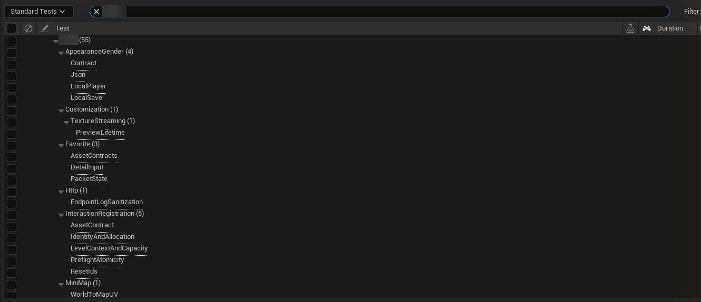
에디터 Automation 테스트 트리 — 기능별 그룹으로 나눈 테스트 정의, 촬영 당시 55개, 현재 69개 (최상단 그룹 이름 가림)
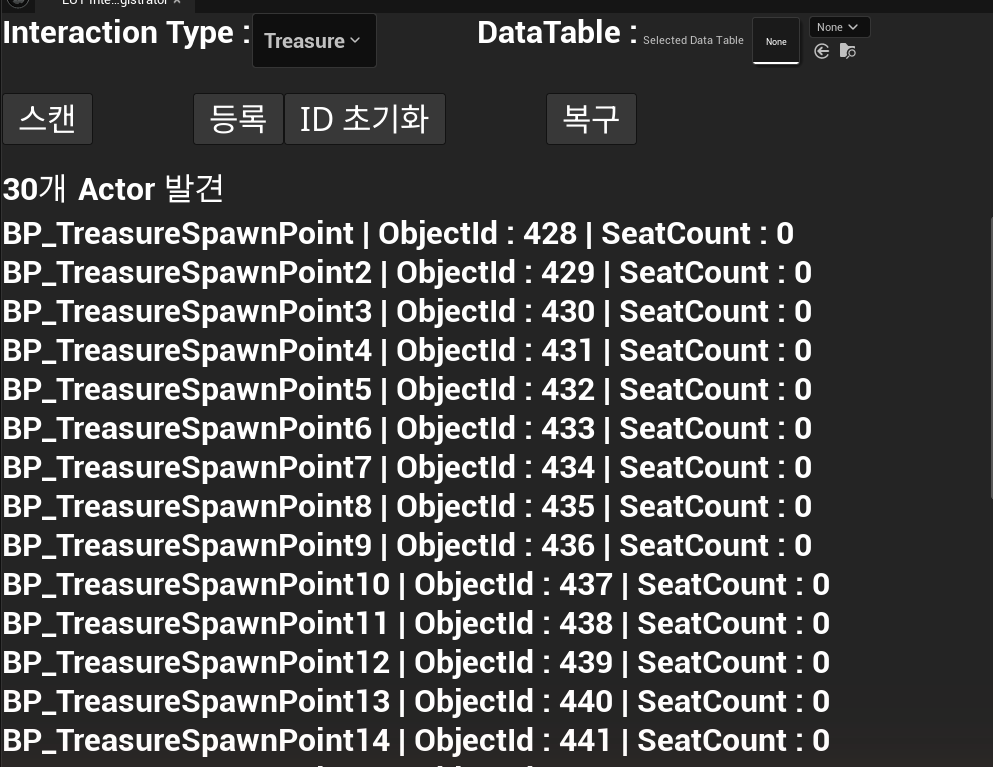
상호작용 ID 등록 도구 — 보물 상호작용 Actor 30개를 스캔해 오브젝트 ID 표시
상호작용 ID 등록 도구 — 전부 성공하거나 아무것도 바꾸지 않음
빌드/배포 자동화와 콘텐츠 청크 CDN 배포
문제 플랫폼별 versionCode 관리로 스토어 업로드가 거부될 수 있음판단 하나의 semver에서 단조증가 값을 뽑는 고정 자릿수 인코딩결과 3플랫폼 빌드와 콘텐츠 청크 CDN 배포, 콘텐츠 리비전 16까지 게시·전환(정식 출시 전)
Android 빌드를 Jenkins에 연결하고 iOS TestFlight·Windows 패키징 파이프라인까지 구축했습니다. 버전 역전을 막는 versionCode 정책을 세우고, 앱 업데이트 없이 콘텐츠만 교체하는 3플랫폼 콘텐츠 청크 CDN 배포 파이프라인을 만들었습니다.
2026.06 ~
Jenkins
Android · iOS · Windows
semver
콘텐츠 청크 · CDN
초기에는 최신 코드 fast-forward pull → semver 기반 versionCode 계산 → 패키징 → 스토어 내부 테스트 업로드로 이어지는 Android 빌드 래퍼를 만들어 Jenkins에 연결했습니다. 이후 Jenkins가 사내 저장소의 최신 코드를 직접 받아 빌드하고 versionCode는 정책에 맞춰 job 입력값으로 지정하는 구조로 옮겼습니다. Windows 배치 파서 결함(괄호 이스케이프·코드페이지)도 수정했습니다.
iOS는 배포 서명 팀을 전환하고 TestFlight 컴파일·서명 실패를 해결해 Jenkins job으로 TestFlight 배포까지 진행했습니다.
iOS cook이 모듈 로드 실패로 중단되던 문제는 8라운드의 가설 소거 끝에, 서드파티 프레임워크 23개에 붙은 macOS Gatekeeper 격리 속성(com.apple.quarantine)이 원인임을 규명했습니다. git·내용 비교로는 보이지 않는 파일 메타데이터였고, 격리를 제거한 뒤 full cook 6,383 패키지를 완주했습니다.
Jenkins job 이름 체계를 역할·플랫폼 기준으로 통일하고 각 job에 역할·입력·결과·주의 사항을 기재했습니다. iOS Ad Hoc job은 청크를 쓰지 않는 Development 오프라인 IPA 전용으로 재설계해 실기기 설치·테스트를 확인했습니다.
Windows 패키징도 별도 Jenkins 파이프라인으로 운용하고, 청크 패키지와 CDN 다운로드를 검증해 모바일 이관 절차를 문서화했습니다.
원본은 플랫폼별로 versionCode를 따로 관리해 특정 조건에서 자릿수가 넘쳐 스토어 업로드가 거부될 수 있었습니다. 그래서 하나의 semver에서 항상 단조증가하는 값을 뽑는 고정 자릿수 인코딩을 설계하고, 규칙을 버전 정책으로 문서화했습니다.
서버 대상(Dev/Live)에 따라 패키지명이 자동 분기되게 하고, 리브랜딩에 맞춰 패키징 스크립트의 프로젝트명 치환을 일괄 적용했습니다.
초기 Android 빌드 래퍼 파이프라인
versionCode 고정 자릿수 인코딩
MAJOR × 1,000,000 + MINOR × 10,000 + PATCH × 100 + 빌드 번호
1.0.1 · 빌드 4
1,000,104
1.0.10 · 빌드 1
1,001,001
1.1.0 · 빌드 1
1,010,001
자릿수를 고정해 1.0.10 < 1.1.0 순서가 항상 유지됩니다. 대신 PATCH·빌드 번호는 각각 99까지만 표현할 수 있습니다.
콘텐츠 청크 CDN 배포
앱과 기본 청크를 같은 cook으로 만드는 패키지 빌드, 기존 앱 위에 콘텐츠만 바꾸는 패치 빌드, 3플랫폼 게시 후 콘텐츠 버전을 전환하는 릴리스 단계로 나눴습니다.
콘텐츠 버전은 CDN이 현재 내보낸 번호 + 1로 자동 계산해 3플랫폼이 같은 번호를 쓰게 했습니다. 이미 게시된 번호면 빌드 시작 전에 실패하고, 업로드 직전에 한 번 더 확인합니다.
패치 빌드는 코드·설정 변경처럼 앱 재빌드가 필요한 변경을 미리 거부합니다. Windows 배포 zip은 CDN 청크와 같은 cook에서 추출해 짝이 어긋나지 않게 했습니다.
문자열 테이블 수정이 콘텐츠 업데이트로 나가지 않던 원인을 역참조 추적으로 찾았습니다. config의 하드 클래스 참조가 위젯과 문자열 테이블을 부팅 청크로 끌고 가고 있어 소프트 참조로 바꿨습니다.
3플랫폼 패키지 빌드 → 서버 자동 게시(게시 구현은 서버 담당) → 콘텐츠 버전 전환 → Windows 배포 zip까지 한 사이클을 통과했고, 2026-11-21 기준 콘텐츠 리비전 16까지 게시·전환했습니다(정식 출시 전, 내부 테스트 배포 대상). 콘텐츠만 바꾼 패치가 기기에 전달·적용되는 검증은 다음 단계입니다.
한 릴리스에서 iOS 빌드가 스토어 업로드에는 성공했지만 Apple 쪽 처리 대기 시간 초과로 실패 처리돼, 앱과 짝이 되는 콘텐츠 청크가 게시되지 않았습니다. 이미 예약한 콘텐츠 버전을 재사용하도록 승인하고 iOS만 다시 빌드해 3플랫폼 게시를 맞춘 뒤 전환했습니다. 그동안 공개 콘텐츠 버전은 이전 값으로 유지돼, 앱과 콘텐츠가 어긋난 상태는 공개되지 않았습니다.
콘텐츠 청크 배포 — 앱 업데이트 없이 콘텐츠만 교체
첫 실행 시 필수 리소스 다운로드 확인 → 진행 바 → 파일 마운트 (여유 공간 값 가림)
크로스플랫폼 크래시·빌드 블로커 4건 트러블슈팅
문제 원인 규명이 까다로운 크래시·빌드 블로커 4건판단 설정 토글 격리와 ndk-stack 심볼 분석으로 원인 특정결과 3건은 근본 원인 수정, cook 데드락 1건은 우회
원인 규명이 까다로운 크래시·빌드 블로커 4건을 추적해 3건은 근본 원인을 고치고, cook 데드락 1건은 원인 플러그인을 특정해 비활성화로 우회했습니다.
2026.06 ~ 08
ndk-stack
cook · OBB
Shipping / Development 구성
cook 데드락
빌드머신에서도 재현되는 cook 중단을 설정 토글로 격리해 분산 셰이더 컴파일 플러그인의 데드락으로 특정하고, 플러그인을 비활성화해 패키징 블로커를 해소했습니다.
로그인 맵 SIGSEGV
청크 다운로더를 끈 설정인데도 cook이 일부 콘텐츠를 다운로드형 청크로 분리해, OBB에 부팅 맵만 들어가 로그인 맵 진입 시 크래시가 났습니다. ndk-stack 심볼 분석으로 특정하고 전 콘텐츠를 로컬 패키지에 포함했습니다.
부팅 맵 레이스
부팅 완료 신호를 동기 브로드캐스트하는 도중 BeginPlay 안에서 레벨 이동이 일어나 크래시가 났습니다. 처리를 다음 틱으로 지연해 해결했습니다.
Shipping 가드 불일치
Dev 테스트 빌드도 Shipping 구성으로 빌드돼, 출시용 가드가 로그 등 개발 기능까지 꺼서 진단이 어렵고 외부 API 실패 시 앱이 종료됐습니다. 서버 대상 매크로를 함께 보는 조건으로 바꿔 여러 커밋에 걸쳐 정리했습니다.
웹 로그인 전환 — 임베디드 웹뷰에서 OS 브라우저 + 딥링크로
문제 엔진 내장 웹뷰가 최신 로그인 페이지와 카메라·마이크를 처리하지 못함판단 엔진 패치 대신 OS 브라우저와 커스텀 스킴 딥링크로 전환결과 Android·iOS·Windows에서 웹 로그인 후 게임서버 로그인 확인
엔진 내장 웹뷰가 최신 웹 로그인 페이지를 띄우지 못하고 카메라·마이크도 동작하지 않아, 웹을 OS 브라우저에서 열고 결과를 커스텀 스킴 딥링크로 받는 구조로 바꿨습니다.
2026.06 ~ 10
Android · iOS · Windows
Chrome Custom Tabs
SFSafariViewController
커스텀 스킴 딥링크
문제
엔진 내장 웹뷰(구버전 Chromium)가 웹팀의 최신 JS 번들을 파싱하지 못해 로그인 페이지가 흰 화면으로 떴습니다. 같은 웹뷰에서 카메라·마이크도 동작하지 않았습니다.
판단
엔진을 패치하는 대신 시스템 브라우저에서 웹을 열고 결과를 딥링크로 받기로 했습니다. 카메라·마이크는 엔진 웹뷰 소스까지 추적해, 웹의 미디어 권한 요청을 처리하지 않아 기본 거부된다는 원인을 확인하고 같은 OS 브라우저 방식으로 해결했습니다.
Android(intent-filter)·iOS(URL scheme)·Windows(프로토콜 등록과 실행 중인 앱으로 넘겨주는 런처) 딥링크 수신부를 만들었습니다.
로그인 시도 단위 대기 플래그로 요청하지 않은 딥링크는 거부하고, 시도 일련번호로 이전 시도의 늦은 응답을 무시했습니다. 프로필 조회로 계정 식별자를 다시 확인한 뒤 로그인을 마무리합니다.
게임서버에 연결되지 않은 상태면 로그인을 시작하지 않게 했고, Windows 프로토콜 실행이 URL 형태를 바꿔 딥링크가 버려지던 문제를 고쳤습니다. PIE에서 딥링크 콜백을 재현하는 콘솔 명령도 만들었습니다.
이 흐름을 정식 로그인으로 확정해 전환하고, 토큰 만료 시 강제 로그아웃과 웹 로그아웃 딥링크 처리를 추가했습니다.
Android·iOS·Windows에서 웹 로그인 후 게임서버 로그인까지 확인했고, 웹 미디어는 Android 실기기에서 카메라 동작을 확인했습니다.
연결 연출 → 로그인 버튼 → 시스템 브라우저 로그인 → 앱 복귀 → 월드맵 (계정 입력·브랜드 표기·빌드 표기 가림)
웹 로그인 흐름두 방식의 비교
플랫폼별 조명 분리 — 모바일은 구운 조명, Windows는 실시간 조명
문제 한 레벨에서 모바일은 구운 조명을, Windows는 실시간 조명(Lumen)을 써야 함판단 레벨을 플랫폼별로 2개 운용하지 않고 조명만 서브레벨 2개로 분리결과 Windows 콘텐츠 청크 약 129.6MB 감소, 모바일 청크 크기 변화 없음
한 레벨에서 모바일은 기존 구운 조명을, Windows는 실시간 조명(Lumen)을 쓰도록 조명을 플랫폼별 서브레벨 2개로 나눴습니다.
2026.11
서브레벨
Lumen
패키징 규칙
실행 중인 렌더러에 맞는 조명 서브레벨을 불러오는 서브시스템을 만들었습니다.
Windows 패키지에서는 모바일용 구운 조명 데이터를 빼도록 패키징 규칙을 추가했습니다.
레벨을 플랫폼별로 2개 운용하는 안은 배치 변경을 두 번 해야 해서, 색감만 옮기는 안과 함께 버렸습니다.
조명 굽기는 약 1시간 40분, 조명 맵 6,444개였습니다. 에디터의 같은 시점에서 분리 전과 분리 후 모바일 화면의 평균 픽셀 차이는 약 2/255였습니다.
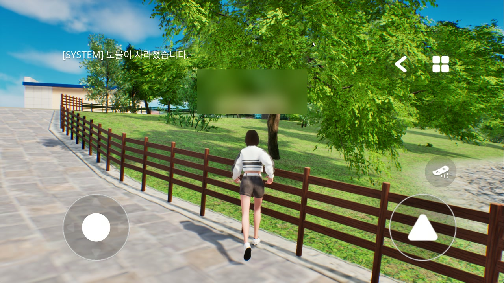
오아시스 스팟의 Windows 빌드 화면 — PC용 조명 서브레벨이 로드된 상태 (닉네임 가림). 모바일 화면과의 비교는 아닙니다.
에디터 비교, 3플랫폼 풀빌드, Windows 청크 크기 비교까지 확인해 릴리스에 반영했습니다. 모바일 실기기의 화면·프레임 확인은 아직 하지 않았습니다. 레벨과 라이팅 원본은 아트 담당 작업입니다.
기타
요약 스마트폴 현황(Mock), 신규 회원 튜토리얼, 튜토리얼 이미지 메모리, 이미지·영상 빌보드, 즐겨찾기 TCP 연동, FCM 푸시, Android 요구사항 대응, 아바타·아이템 데이터 이관
스마트폴 현황(Mock) — 외부 API가 아직 없어 클라이언트 Mock 데이터로 시설 현황 UI를 먼저 완성하고, 실연동 때 데이터 소스만 바꾸도록 분리했습니다.
신규 회원 튜토리얼 — 입장 패킷의 튜토리얼 상태로 신규 회원을 판별해 첫 진입 튜토리얼(표지 → 12쪽 이미지 가이드 → 완료 팝업)을 월드맵에서 한 번 표시합니다. 이미지는 REST 목록으로 받아 기존 안내 팝업을 재사용했고, 완료 패킷은 실패·무응답에 대비해 최초 전송을 포함해 최대 3회까지 보내도록 구현했습니다.
튜토리얼 이미지 메모리 — 튜토리얼에서 이전/다음을 반복하면 GPU 메모리 부족으로 앱이 종료됐습니다. 서버 이미지가 약 4천만 화소라 텍스처 1장이 CPU와 GPU에 각각 약 154MB(화소 수 기준 계산값)를 썼고, 화면에서 벗어난 텍스처가 다음 가비지 컬렉션까지 남아 쌓였습니다. 안내 팝업 이미지는 긴 변 2048px 이하로 줄여 텍스처를 만들고, 현재 쪽 앞뒤 1쪽 밖의 텍스처는 바로 해제하며, 받는 도중 범위를 벗어난 쪽은 디코딩하지 않게 했습니다. 16-bit PNG 버퍼 넘침, 흑백 이미지 깨짐, 모바일 JPEG의 빨강·파랑 뒤바뀜도 함께 고쳤습니다. 수정 후 실기기 재현 확인은 아직 하지 않았습니다.
이미지·영상 빌보드 — 광장 빌보드 16개에 관리자 페이지에서 지정한 이미지를 표시하고, 해제되면 원래 모습으로 되돌립니다. 슬롯 상태를 서브시스템이 보관해 패킷 수신과 빌보드 생성 순서에 상관없이 같은 결과가 나오게 했고, 슬롯 키 규약은 문서로 서버팀과 합의했습니다. 영상 빌보드는 초기 정리 때 지운 영상 플레이어 위젯 코드를 되살려 새 백엔드의 영상 API로 옮겼습니다. 이미지 빌보드는 Windows 빌드에서 서버가 보낸 이미지 16개가 표시되는 것을 확인했고, 영상 빌보드의 실서버 연동 확인은 아직입니다.
즐겨찾기 TCP 연동 — 관광지 즐겨찾기 조회·등록·해제를 게임 서버 TCP로 연동하고 회귀 테스트를 추가했습니다(실서버 검증).
FCM 푸시 — Android 푸시 수신 플러그인과, 개발 메뉴에서 자기 기기로 보내 보는 테스트 도구를 만들었습니다. 테스트 토큰은 게임 인증 토큰과 분리했습니다. iOS는 수신 구현과 빌드 설정(푸시·서명)까지 진행했습니다.
Android 요구사항 대응 — 인앱결제 제거에 맞춰 Android 결제 SDK 의존성을 제외하고 target SDK 36 요구사항에 대응했습니다.
아바타·아이템 데이터 이관 — 신규 아이템 체계로 DataTable을 옮기고 외형 성별 규약을 정리했습니다(구버전 세이브 호환 포함). 규약 변경 뒤 Blueprint 2곳이 이전 규약으로 값을 만들어 여자 선택 시 이전 성별이 서버로 전송되던 결함은 공용 변환 함수로 고치고 성별 검증 테스트를 추가했습니다. 미리보기 의상 텍스처 흐림을 mip 스트리밍 문제로 규명해, 전역 설정 대신 미리보기 메시에만 적용하고 화면을 나가면 원복했습니다.
튜토리얼 표지 → 12쪽 가이드 → 완료 팝업 → 월드맵 (PC 빌드, 닉네임·브랜드 표기 가림)창조존 광장 — 서버가 지정한 이미지가 표시된 빌보드 (Windows 빌드, 닉네임 가림)관광지 즐겨찾기 해제 → 재등록 (게임 서버 TCP)